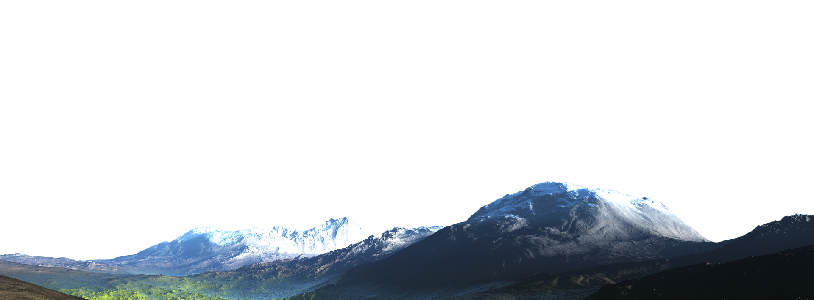

NATURE
extinction
Nature Is Shrinking
The total number of known extinct species is 905 species. Most of them occurred during the 1900s. Estimate of the number of species is still unknown , ranging from three to ten million to the tens of millions, and many of them have been lost forever without being noticed by science. Therefore, the extinction rate may also be underestimated.